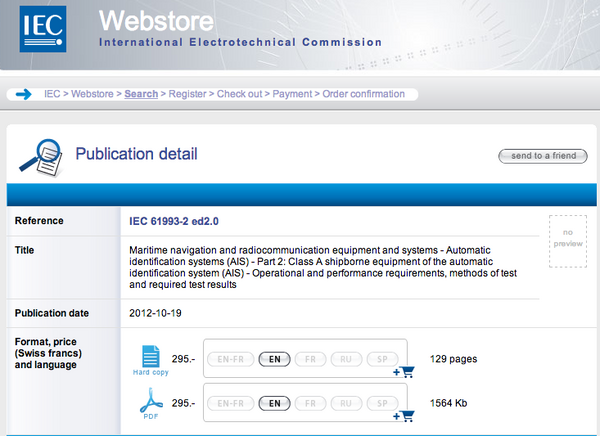
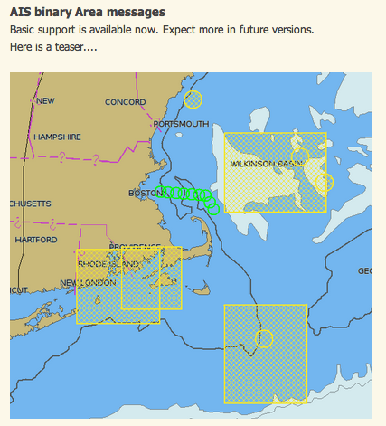
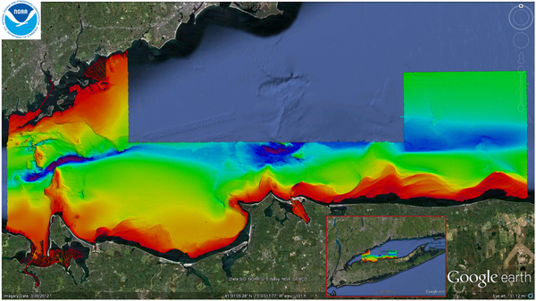

10.31.2012 11:30
Another AIS parser - this one in Java
eNav 2012
TEXAS V
(space based AIS) conferences are next week (and on opposite sides
of the US???), so people are getting busy. I haven't been invited
to either. And I don't typically go to conferences any more unless
I'm invited to speak. Sorry. (well... SF Bay area conferences might
get an exception to my personal policy). Oh, there is also the
Wild Aid
MPA conference soon. That I am going to.
In reaching out to various places looking for sample decodes of the Msg 17 GNSS differential GPS/GLONASS corrections (trying to make libais complete), I got pointed to a new upstart.
http://dma.e-navigation.net/, which links to https://github.com/DaMSA/AisLib.
I had not heard of AisLib before. Github shows it being about a year old. I would have hoped that new AIS projects would reach out to the older ones, but I made sure to email one of the authors to make sure that a link gets made, hit follow in github, and added AisLib to the English AIS article on Wikipedia. And I now understand the confusion people are having between my libais and emails back to me refering to AisLib.
And in case you know of any AIS Application Specific Messages (e.g. Msg 6, 8, 25, or 26) that are out there in use, but not documented, please register them. I appreciate emails about such messages, but I only proposed the registry and do not run a registry. Please see:
IALA-AISM AIS Application Specific Messages: "Collection of regional applications for AIS Application Specific Messages of regional applications for AIS Binary Messages.
http://www.e-navigation.nl/asm
Remember that when creating AIS messages to:
In reaching out to various places looking for sample decodes of the Msg 17 GNSS differential GPS/GLONASS corrections (trying to make libais complete), I got pointed to a new upstart.
http://dma.e-navigation.net/, which links to https://github.com/DaMSA/AisLib.
I had not heard of AisLib before. Github shows it being about a year old. I would have hoped that new AIS projects would reach out to the older ones, but I made sure to email one of the authors to make sure that a link gets made, hit follow in github, and added AisLib to the English AIS article on Wikipedia. And I now understand the confusion people are having between my libais and emails back to me refering to AisLib.
And in case you know of any AIS Application Specific Messages (e.g. Msg 6, 8, 25, or 26) that are out there in use, but not documented, please register them. I appreciate emails about such messages, but I only proposed the registry and do not run a registry. Please see:
IALA-AISM AIS Application Specific Messages: "Collection of regional applications for AIS Application Specific Messages of regional applications for AIS Binary Messages.
http://www.e-navigation.nl/asm
Remember that when creating AIS messages to:
- Include sample AIVDM messages and the associated decodes
- Have your messages be 8 bit aligned
- Reviewed by an outsider (by writing a decoder) to make sure they are understandable
- If you change the bits of a message, use a new dac/fi pair
- use the minimum amount of spare
- keep it simple
- develop the message in the open and publish the spec for free on the internet (not behind any pay or click through nonsense)
- Do NOT create new dac/fi pairs for existing messages. Just don't. It is okay to use another country's DAC/FI pair in your country. Really.
10.29.2012 14:31
libais 0.11 - still more to go
Libais 0.10 had a big binary test
file in it. So here is libais release 0.11. Better, but not there
yet.
http://pypi.python.org/pypi/libais/0.11
https://github.com/schwehr/libais/tags
http://pypi.python.org/pypi/libais/0.11
https://github.com/schwehr/libais/tags
- Add a test directory and test of all top level msgs except 20 in python
- Begin cleanup of test_libais.cpp
- Almost all decoders require pad bits now
- linted - lots of formatting changes
- Start implmenting Msg 17 GNSS differential corrections
- Convert FIX to TODO and put (schwehr) after each to assign them to myself.
- remove bool casting of bitset[offset]
- Implemented 8 1 26
- Clean up c++ logical oprators. Do not use and, or, and not
- Message 24 needed pad. Fixed
- Removed print()
- remove almost all cout/cerr that were not in print()
- Remove lots of dead code
- Pass pad into ais.decode in python, but handle without
10.27.2012 19:17
Book - The Ph.D. Grind
Earlier this week, I had lunch with
with Philip Guo, Fernando Perez, and a couple of other stellar
hackers. I realized only later in the week that I had Philip's
book, The Ph.D.
Grind on my reading list. I decided to swap my reading
priorities and
start it right then. It's well written and is a quick read.
Yeah, I didn't realize that Fernando (aka Mr. iPython) features
prominently in the book and Philip's PhD work. I was interesting
for me to read about a computer science PhD experience. My thesis
was in Geology/Geophysics and the computing environment at Scripps
is not at all like the Stanford CS department. I'm sure eveyones'
experience Ph.D. experience is totally different (even if you had 2
people with the same committee, there are so many factors). I often
wonder what it would have been like if CMU had accepted me to their
CS/Robotics program for a PhD. Instead, they hired me as visiting
faculty to join their Mars Autonomy project for a while. I've been
in government, academia and industry and try to share some when I
teach. However, I'm not comfortable sharing to the level that
Philip did even if I had 5 awesome committee members. There was way
more time being frustrated that there was positive times. I'm glad
I have my Ph.D. and I try to focus on the positives of the
experience. I'm going to go decompress now from the experience of
reading his book.
Oh, and his work on for his thesis looks amazing! If you know me, you know I'm a nut about capturing the process of research with the goal of getting to the point of repeatable research. And I've had similar thoughts to what he actually implemented. I log all bash shell commands, but that is not really enough. So I log ipython commands. And way back in the day (2003?), I was paid to make the smallest linux distribution I could (that included mozilla and java and must be smaller than 256MB), so I started trapping all files that were opened with a linux kernel module. Now, I'm looking at this:
Burrito: Rethinking the Electronic Lab Notebook
From the page, I quote:
If only my bash logs tracked how I felt about that last command I ran? Please give me all wget calls that included NOAA and NGDC in the URL and sort by how well I liked the results.
And then there is CDE: Code, Data, Environment... so how do you replicate how your sonar was running 2 years ago? Unless you have a full virtual machine of control station, it's not gonna work (well, actually, with the way sonar venders do nasty licensing things, this is never going to work even if you cloned the entire computer and software system). But imagine being able to go back to a particular instance of an experiment setup down to all the libraries that include the basic math routines! I'm having bad flashbacks to purchasing a VXWorks BSP for $20K that had atan2 implemented incorrectly.
Oh, and his work on for his thesis looks amazing! If you know me, you know I'm a nut about capturing the process of research with the goal of getting to the point of repeatable research. And I've had similar thoughts to what he actually implemented. I log all bash shell commands, but that is not really enough. So I log ipython commands. And way back in the day (2003?), I was paid to make the smallest linux distribution I could (that included mozilla and java and must be smaller than 256MB), so I started trapping all files that were opened with a linux kernel module. Now, I'm looking at this:
Burrito: Rethinking the Electronic Lab Notebook
From the page, I quote:
- A versioning filesystem that automatically tracks all edits to all of your files and allows you to view old file versions. This eliminates the need to use version control systems or weird file naming conventions.
- A tracer that records the origin (provenance) of files, telling you which program invocations created or read from each file, and what their parameters were.
- A tracer that records your GUI interactions, such as which application windows you were viewing at specific times.
- A set of plugins that record your activities within specific applications, such as which MATLAB commands you were running and which web pages you were visiting.
- A real-time Activity Feed that allows you to view and take notes on your recent activities.
- An Activity Context Viewer that displays what else you were reading and writing when hacking on some part of your code.
- A Computational Context Viewer that shows how changes to your source code and execution parameters affected your experiment's output files.
- A Lab Notebook Generator that creates an HTML summary of your activities over a given time period.
If only my bash logs tracked how I felt about that last command I ran? Please give me all wget calls that included NOAA and NGDC in the URL and sort by how well I liked the results.
And then there is CDE: Code, Data, Environment... so how do you replicate how your sonar was running 2 years ago? Unless you have a full virtual machine of control station, it's not gonna work (well, actually, with the way sonar venders do nasty licensing things, this is never going to work even if you cloned the entire computer and software system). But imagine being able to go back to a particular instance of an experiment setup down to all the libraries that include the basic math routines! I'm having bad flashbacks to purchasing a VXWorks BSP for $20K that had atan2 implemented incorrectly.
10.24.2012 00:10
Google Maps - Mapping old ships
Check out the Google Geo Develeper
Releations team map ships from 1850 and older!
10.21.2012 02:03
Software Carpentry
Earlier this year, I talked with Greg
Wilson of Software
Carpentry. Software Carpentry is doing some really cool work
and my goals with research tools is very closely aligned.
The group has out a preprint of a nice overview paper: Best Practices for Scientific Computing (arXiv:1210.0530). I just gave it a quick read and I generally agree with it (only with some smaller details do I differ, but that makes life more interesting). The Abstract:
Computing Skills for Scientists and Engineers... a quick introduction to Software Carpentry
The group has out a preprint of a nice overview paper: Best Practices for Scientific Computing (arXiv:1210.0530). I just gave it a quick read and I generally agree with it (only with some smaller details do I differ, but that makes life more interesting). The Abstract:
Scientists spend an increasing amount of time building and using software. However, most scientists are never taught how to do this efficiently. As a result, many are unaware of tools and practices that would allow them to write more reliable and maintainable code with less effort. We describe a set of best practices for scientific software development that have solid foundations in research and experience, and that improve scientists' productivity and the reliability of their software.They have lots of videos, but I have not had a chance to check them out yet.
Computing Skills for Scientists and Engineers... a quick introduction to Software Carpentry
10.20.2012 15:23
The cost of costs
The IEC
just released IEC 61993-2 ed2.0, but since it is 295 Swiss
francs, I'm not going to get a copy of it. This spec is titled
"Part 2: Class A shipborne equipment of the automatic
identification system (AIS) - Operational and performance
requirements, methods of test and required test results. The cost
of the cost is that many professionals (and any generally
interested personal) will not read and evaluate what is in here.
How are mariners supposed to trust closed documents like this? I
really loved when I tested a "type approved" (by the USCG) AIS
device in 2007 and it failed item #1 in the test spec I had for it.
These specs are so poorly done that I would definitely not trust
what is in there.
These kinds of documents really need to be publicly available free of charge if the IEC really cares about safe operations of ships. Depressing. I also think that the results for each device type should be logged and public The safety of mariners, the environment and ships is at stake. As a community, we need to take that more seriously.
Note: I actually have 80/436/CDV in my email from 2006 when I got looped in to the process. More than 6 years have passed from that draft.
Abstract:
These kinds of documents really need to be publicly available free of charge if the IEC really cares about safe operations of ships. Depressing. I also think that the results for each device type should be logged and public The safety of mariners, the environment and ships is at stake. As a community, we need to take that more seriously.
Note: I actually have 80/436/CDV in my email from 2006 when I got looped in to the process. More than 6 years have passed from that draft.

Abstract:
IEC 61993-2:2012(E) specifies the minimum operational and performance requirements, methods of testing and required test results conforming to performance standards adopted by the IMO in Resolution MSC.74(69), Annex 3, Shipborne Automatic Identification System. This standard incorporates the applicable technical characteristics of Class A shipborne equipment included in Recommendation ITU-R M.1371-4 and takes into account the ITU Radio Regulations, where applicable. In addition, it takes account of IMO Resolution A.694(17) to which IEC 60945 is associated. When a requirement in this standard is different from IEC 60945, the requirement of this standard takes precedence. This International Standard also specifies the minimum requirements both for the means to input and display data and for the interfaces to other equipment suitable to be used as means of input and display data. This second edition cancels and replaces the first edition, published in 2001. This edition constitutes a technical revision.If anyone wants to donate a pdf to me, I'd happily accept it, but I would rather just see these docs all freely available.
10.19.2012 16:43
libais 0.9 release
I just release libais version 0.9.
That doesn't mean that the next release will be 1.0. There will
likely be a 0.10 and 0.11. Still to come is finishing off the IMO
Circ 289 Env. Sensor report, circ 289 adding addressed routes, Msg
17's GNSS differential payload specification, ITU-R M.823, does not
require that you pay a fortune to download it. In fact, it doesn't
cost anything. However, it is not under a free license. It doesn't
have any sort of license on the doc. sigh.
http://pypi.python.org/pypi/libais/0.9
http://pypi.python.org/pypi/libais/0.9
- Added RIS 8_200_{10,23,24,40,55}
- Implmented the rest of Circ 236 BBM
- Implmented all Circ 289 messages except ABM route and BBM env sensors
- Implemented AIS messages 6, 9, 10, 12, 15-17, 20-22, 23, 25-27. Still payload work to do.
- Imported rolker's CMakeList.txt
10.19.2012 12:19
Notes from teaching over a Google Hangout Live
Yesterday was lecture 2 of 2 of my
2012 Research Tools teaching at the UNH Center for Coastal and
Ocean Mapping. I felt like the 2nd lecture went much smoother than
the 1st. A lot of that feeling probably comes from having the 1st
lecture under my belt. Here are some of my thoughts a day later on
how we did things this year. Having the YouTube/G+ Hangouts system
automatically generate and post the video means that I spent far
less energy on releasing the lectures than I did last year. I spent
about 5 hours prepairing yesterday's class (but should have put in
another couple hours on class notes and testing). Last year, I
spent about 15 hours of prep per class and about 5-7 hours after
each class to clean the audio and make the video.
- Why did we end up with a couple vm instances saying they were already in use or missing on of the files from the zip?
- Two laptops on my end helped a ton. Allows me to see if text is legible and I can watch the class. It is key to turn off the built-in mic of the 2nd laptop.
- The fans on the macbook air are loud and annoying when doing video.
- I used apple iphone headphones. They seem to work well and I don't notice that I'm wearing them
- Would be better if I can see the students' screens. I would not be able to read what is on them, but just seeing the bulk color change as they switch apps would help
- Having Roxy in the room to debug student sticking points really is awesome!
- Doing things like putty with the students was hard as I don't have windows to copy what they do
- It's a bummer when I do things that only folks at CCOM can do. I think it is important to have them try putty and IRC, but I wish I could teach these in a way that was general. The classroom computers all have the same external IP address, which prevents using IRC to freenode… it thinks it is being attacked when all the students log in. For ssh/putty, are there still free services proving ssh/shell somewhere on the internet?
- The virtual machine part went much faster. Only installing one small package (ipython) was much more time effecient. Dropbox install was a serious time sync last year.
- Need to work on a better virtual machine instance.
- Don't like that I gave out an un-updated ubuntu instance
- Remove open/libre office and other large non-useful packages. They are easy to add back in
- Add Google Drive (if/when it's available), DropBox, KeePassX and Google Earth to the instance.
- Puppet requirements control?
- How to shrink the instance to the smallest size after removing non-essential packages.
- Need student feedback. What did they like. What do they remember?
- Need some excercises for the students to try. I had some, but not enough last year.
- Students whispering in the 2nd row prevented me from hearing in the rest of the room. The mic is great, but super sensitive
10.16.2012 12:55
ResearchTools 2012 Lecture 01
Here is the video from the first
lecture. This was done as a broadcast Google hang out. At one
point, I noticed that there were two other people following the
video. This was a lot about me trying to figure out how to best
teach over a Google Hangout.
http://vislab-ccom.unh.edu/~schwehr/Classes/2012/ Notes are definitely a work in progress (WIP).
http://vislab-ccom.unh.edu/~schwehr/Classes/2012/ Notes are definitely a work in progress (WIP).
10.12.2012 19:18
AIS Area Notices in OpenCPN
Go Roland! A while back he proposed
the idea of adding the AIS Area Notice (Msg 8, Dac 001, FI 22) that
I co-developed (yeah, sorry, it's painful). He proposed a patch to
OpenCPN and it's in!
http://opencpn.org/ocpn/release3.0
Here is the patch submitted by Roland Arsenault.
http://opencpn.org/ocpn/release3.0
Here is the patch submitted by Roland Arsenault.

10.12.2012 12:53
AAG April 2013 meeting - DEM advances and challenges
Saturday, Oct 13 (tomorrow): OSGeo California
Chapter 2012 Annual Meeting [GeoMeetup]:
Meeting discussions. Will be in San Jose, CA.
Next week, I'm hoping to do a Google Live Hangout for my two lectures at the Center for Coastal and Ocean Mapping, UNH. I'll be at Google, Mountain View while giving these lectures.
Thanks to Barry at NOAA NGDC Boulder, CO for this:
April 9-13: Association of American Geographers (AAG) 2013 Annual Meeting in Los Angeles
http://www.aag.org/annualmeeting
http://noaacoastsurvey.wordpress.com/2012/10/11/thomasjeffersonlis/
Google Oceans / Google Earth makes a great way to present your new bathymetry, in case you didn't already know
original image
Next week, I'm hoping to do a Google Live Hangout for my two lectures at the Center for Coastal and Ocean Mapping, UNH. I'll be at Google, Mountain View while giving these lectures.
Thanks to Barry at NOAA NGDC Boulder, CO for this:
April 9-13: Association of American Geographers (AAG) 2013 Annual Meeting in Los Angeles
http://www.aag.org/annualmeeting
Title: Advances and Challenges in Digital Elevation Models Description: Digital elevation models (DEMs) are a fundamental base layer for many applications, such as hydrologic and storm surge modeling , tsunami and sea-level rise modeling, ecosystems management and habitat research, coastal and marine spatial planning, sediment-transport analysis, and hazard mitigation and community preparedness. We invite papers/illustrated papers on recent advances in DEMs, including new techniques for building or evaluating DEMs, and in challenges that DEMs pose to applications that require them. How can DEMs be improved to support better planning or research? What are the limitations of DEMs in how they are used? How does DEM uncertainty or inaccuracy impact results derived from their use? Organizers: Barry W. Eakins (NOAA) and Jeffrey J. Danielson (USGS) Chair: John C. Brock (USGS) Sponsorships: Coastal and Marine Specialty Group Geomorphology Specialty Group Spatial Analysis and Modeling Specialty GroupAnd because this is just too awesome not to share:
http://noaacoastsurvey.wordpress.com/2012/10/11/thomasjeffersonlis/
Google Oceans / Google Earth makes a great way to present your new bathymetry, in case you didn't already know
original image


10.11.2012 11:48
org-mode and overload
Most people who are around me work or
school wise know that I'm an emacs/org-mode and python nut case. I
got a nice note from Ishan, who is a graduate student at CMU with 2
links that say I'm not alone in teaching with emacs/org-mode.
http://pascal.iiit.ac.in/~itws2 and they published a paper: Using Org-mode and Subversion for Managing and Publishing Content in Computer Science courses, Sankalp Khare,Ishan Misra,Venkatesh Choppella, T4E 2012 : IEEE International Conference on Technology for Education.
Yeah, this is a reminder that I'm terrible about getting papers out. I think I've pretty much given up with the copyright situation / costs involved. And lately I've not been blogging much. I feel that I should probably explain... life and work have recently done a good job of running over me! Monica and I got married last month, work at Google is insane (too many amazing projects that need attention right this moment), and trying to help out with MSL/Curiosity. Monica and I snuck off to Vieques, PR for a few days, but it was not nearly enough time.
I have been making a little bit of progress on libais, but otherwise, I won't be able to blog much for a while. I've got a ton that I would like to share, but there just aren't enough hours in the day. So I expect my blog to be sparse from the next couple months, but do watch this space and I will try to be back soon. I'm am probably the biggest user of my blog
http://pascal.iiit.ac.in/~itws2 and they published a paper: Using Org-mode and Subversion for Managing and Publishing Content in Computer Science courses, Sankalp Khare,Ishan Misra,Venkatesh Choppella, T4E 2012 : IEEE International Conference on Technology for Education.
Yeah, this is a reminder that I'm terrible about getting papers out. I think I've pretty much given up with the copyright situation / costs involved. And lately I've not been blogging much. I feel that I should probably explain... life and work have recently done a good job of running over me! Monica and I got married last month, work at Google is insane (too many amazing projects that need attention right this moment), and trying to help out with MSL/Curiosity. Monica and I snuck off to Vieques, PR for a few days, but it was not nearly enough time.
I have been making a little bit of progress on libais, but otherwise, I won't be able to blog much for a while. I've got a ton that I would like to share, but there just aren't enough hours in the day. So I expect my blog to be sparse from the next couple months, but do watch this space and I will try to be back soon. I'm am probably the biggest user of my blog